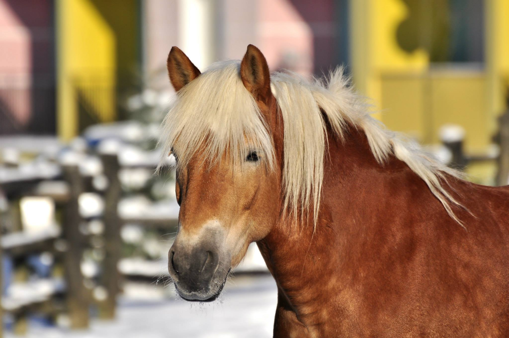
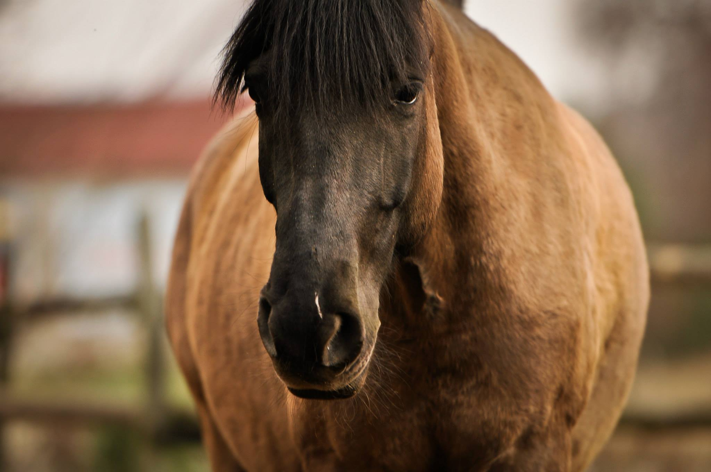
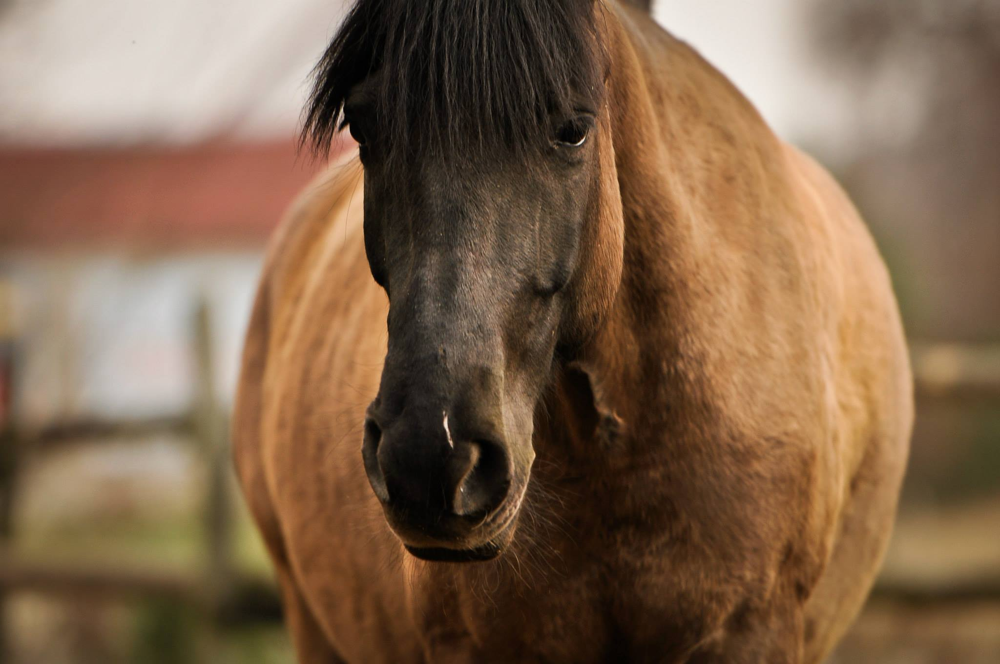

22.04.2021
Mieszkańcy naszej stajni
Luiza to koń rasy Haflinger, z reguły chodzi na hipoterapię i lonże
Gwiazdka to koń rasy Hucuł, jest dobra dla jeźdźców początkujących i tych bardziej zaawansowanych
22.04.2021
Luiza to koń rasy Haflinger, z reguły chodzi na hipoterapię i lonże
Gwiazdka to koń rasy Hucuł, jest dobra dla jeźdźców początkujących i tych bardziej zaawansowanych